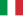

List of development aid sovereign state donors
International development aid is given by many non-private donors. The first table is based on official development assistance (ODA) figures published by the OECD for members of its Development Assistance Committee (DAC). Non-DAC members included in the OECD's publishing are listed separately.
Luxembourg made the largest contribution as a percentage of gross national income (GNI) at 1.05% and the United Nations’ ODA target of 0.7% of GNI was also exceeded by Norway (1.02%), Sweden (0.99%) and Denmark (0.71%).[1] The European Union accumulated a higher portion of GDP as a form of foreign aid than any other economic union.[2]
The United States is a small contributor relative to GNI (0.18% 2016[3]) but is the largest single DAC donor of ODA in 2019 (US$34.6 billion), followed by Germany (0.6% GNI, US$23.8 billion), the United Kingdom (0.7%, US$19.4 billion), Japan (0.2%, US$15.5 billion) and France (0.4%, US$12.2 billion). Many providers beyond the DAC have long traditions of development cooperation. Amongst these, according to the preliminary figures for 2019 reported to the OECD, Turkey exceeded the 0.7% ODA/GNI target with 1.15%.[1]
Net official development assistance by donor
[edit]To qualify as official development assistance, a contribution must contain three elements:
- Be undertaken by the official sector (that is, a government or government agency);
- With promotion of economic development and welfare as the main objective;
- At concessional financial terms (that is, with favorable loan terms.)
Thus, by definition, ODA does not include private donations, nor any development loans at market rates.
The sum of contributions by EU member states, considered separately from EU institutions, was $73.80 billion.[4]
The OECD's Development Assistance Committee members' total budget reached 152.8 billion dollars and was contributed by the following donors in 2019:[1]
Development Assistance by DAC Members
[edit]| Donor | Total development aid | Development aid per capita [citation needed] |
% of GNI |
|---|---|---|---|
| $2.95 billion | $129.92 | 0.22 | |
| $1.21 billion | $137.59 | 0.27 | |
| $2.18 billion | $167.20 | 0.42 | |
| $6.4 billion[5] | $170.25 | 0.27 | |
| $310 million | $18.85 | 0.13 | |
| $2.55 billion | $447.05 | 0.71 | |
| $14.827 billion[6] | $27.03 | ||
| $1.13 billion | $234.13 | 0.42 | |
| $12.18 billion | $137.35 | 0.44 | |
| $23.81 billion | $214.73 | 0.60 | |
| $310 million | $25.04 | 0.14 | |
| $70 million | $120.29 | 0.27 | |
| $940 million | $151.2 | 0.31 | |
|  Italy | $4.9 billion | $63.38 | 0.24 |
| $15.51 billion[7] | $73.58 | 0.29 | |
| $470 million | $609.48 | 1.05 | |
| $5.29 billion | $338.38 | 0.59 | |
| $560 million | $90.75 | 0.28 | |
| $4.29 billion | $812.58 | 1.02 | |
| $680 million | $11.45 | 0.12 | |
| $370 million | $30.07 | 0.16 | |
| $130 million | $16.56 | 0.12 | |
| $90 million | $29.04 | 0.16 | |
| $2.52 billion | $37.13 | 0.15 | |
| $2.90 billion | $34.52 | 0.21 | |
| $5.40 billion | $701.10 | 0.99 | |
| $3.09 billion | $421.37 | 0.44 | |
| $19.37 billion | $284.85 | 0.50 | |
| $34.62 billion | $95.52 | 0.16 |
Development Assistance by Non-DAC members
[edit]Non-DAC members reported the following figures:
| Donor | Total development aid | Development aid per capita [citation needed] |
% of GNI |
|---|---|---|---|
| $38 billion [8][9][10] | $27.86 | 0.36 | |
| $33 billion ($2.4 billion grants + $30.59 billion LOC)[11][12] | $21.24 | 0.65 | |
| $12.24 billion | $467 | 0.55 | |
| $8.652 billion | $47 | 1.15 | |
| $2 billion [13] | $757.80 | 1.17 | |
| $1.14 billion | $8 | 0.03 | |
| $502 million [14][15][16][17] | $21.3 | 0.07 [14] | |
| $411 million | $22 | 0.14 | |
| $280 million | $24 | 0.07 | |
| $150 million | $15 | 0.1 | |
| $60 million | $14 | 0.11 | |
| $50 million | $12 | 0.14 | |
| $40 million | $23 | 0.13 | |
| $40 million | $22 | 0.3 | |
| $30 million | $10 | 0.10 |
See also
[edit]References
[edit]- ^ a b c ODA-2019-detailed-summary https://www.oecd.org/dac/financing-sustainable-development/development-finance-data/ODA-2019-detailed-summary.pdf
- ^ Hunt, Michael (2014). The World Transformed 1945 to the Present. New York: New York. pp. 516–517. ISBN 9780199371020.
- ^ "Net ODA provided, total (% of GNI)". data.worldbank.org. Retrieved 18 December 2020.
- ^ OECD 2016.
- ^ "Foreign Aid Portal".
- ^ OECD 2016, p. 3, "In 2015, total net ODA from the 28 EU member states was USD 74 billion, representing 0.47% of their GNI. Net disbursements by EU Institutions were USD 13.8 billion, a slight fall of 0.5% in real terms compared to 2014.".
- ^ (www.dw.com), Deutsche Welle. "Can Japan compete with China over development aid? | Asia| An in-depth look at news from across the continent | DW | 22.02.2018". DW.COM. Retrieved 2018-03-04.
- ^ Jennings, Ralph. "China Is Giving More Foreign Aid Than It Gets". Forbes. Retrieved 2018-02-20.
- ^ Chandran, Nyshka (2017-10-13). "5 charts that show how China is spending billions in foreign aid". CNBC. Retrieved 2018-02-20.
- ^ Hatton, Celia (2017-10-11). "China's secret aid empire uncovered". BBC News. Retrieved 2018-02-20.
- ^ "Line of Credit for Development work in foreign countries". Ministry of External Affairs. 2021-02-05. Retrieved 2021-02-05.
- ^ "Emerging power India gives more aid than it receives". 22 March 2017.
- ^ "Qatar's annual development aid stands at $2bn, says minister". Gulf-Times (in Arabic). 2017-11-19. Retrieved 2018-02-20.
- ^ a b MOFA. "Official Development Assistance". Ministry of Foreign Affairs (Taiwan).
- ^ Bonnie Glick (2022-11-30). "A Revamped Taiwanese Approach to Foreign Assistance". Global Taiwan Brief. 7 (23). Global Taiwan Institute: 7–9.
- ^ David Merkle (2021-07-05). "A Dynamic Player in East Asia". International Reports (2). Konrad-Adenauer-Stiftung: 68–77.
- ^ Alain Guilloux (2016-08-09). "Taiwan's humanitarian aid/disaster relief: Wither or prosper?". Taiwan-U.S. Quarterly Analysis. Brookings Institution's Center for East Asia Policy Studies.
Bibliography
[edit]- OECD (13 April 2016). "Development aid in 2015 continues to grow despite costs for in-donor refugees" (PDF). OECD. Retrieved 7 December 2021.
External links
[edit]- "Development finance statistics". OECD.
- "Development aid rises again in 2015, spending on refugees doubles". OECD.
- "Development and cooperation". European Union. 2016-06-16.
- "Budget". USAID. 2019-03-11.
- "Provisional UK official development assistance as a proportion of gross national income: 2015" (PDF). DFID (UK aid).